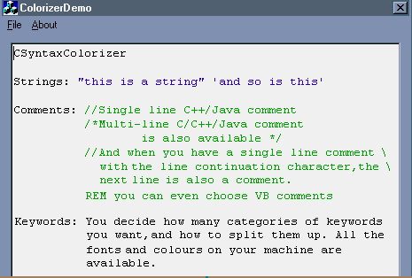

CSyntaxColorizer: Класс подсветки синтаксисаАвтор: Jeff Schering
 Компилятор: Visual C++ 6, (MFC класс CRichEditCtrl) OverviewКласс CSyntaxColorizer, описанный здесь, является быстрым и универсальным для подсветки синтаксиса кода. Класс содержит несколько методов для изменения цвета комментариев, строк и ключевых слов. Подсвеченные слова так же можно сделать жирными, наклонными и подчёркнутыми. Вышеупомянутые методы используют структуру CHARFORMAT в качестве входного параметра, в которой и задаёстся форматирование текста. По умолчанию группы для класса CSyntaxColorizer распределены следующим образом: Группа 0: VC++ ключевые слова, такие как for, if, while, void и т.д. Группа 1: VC++ директивы компилятора, такие как #define, #include и т.д. Группа 2: VC++ псевдокомментарии компилятора, такие как once, auto_inline и т.д. CSyntaxColorizer содержит переменные (m_cfDefault, m_cfComment и m_cfString) типа CHARFORMAT. Их значения используются при инициализации внутренних списков класса. По умолчанию эти структуры содержат шрифт Courier New, размером 10pt. Естевственно, класс содержит методы, чтобы можно было изменять эти значения (см. ниже). Ниже приведены объявления в CSyntaxColorizer.h для этих методов: void Colorize(long StartChar,
long nEndChar,
CRichEditCtrl *pCtrl);
void Colorize(CHARRANGE cr,
CRichEditCtrl *pCtrl);
void GetCommentStyle(CHARFORMAT &cf)
{
cf = m_cfComment;
};
void GetStringStyle(CHARFORMAT &cf)
{
cf = m_cfString;
};
void GetGroupStyle(int grp, CHARFORMAT &cf);
void GetDefaultStyle(CHARFORMAT &cf)
{
cf = m_cfDefault;
};
void SetCommentStyle(CHARFORMAT cf)
{
m_cfComment = cf;
};
Использование CSyntaxColorizerСамый простой и быстрый способ использования этого класса, это сперва объявить его, а затем вызвать одну из функций-членов Colorize. НапримерCSyntaxColorizer sc;Сперва создаётся объект, а затем вызывается метод Colorize, который в данном случае разукрашевает весь текст в указанном окне rich edit цветами, указанными по умолчанию. Если Вам не нравятся цвета по умолчанию, то можно изменить их: sc.SetCommentColor(RGB(255,0,0));Эти методы изменяют цвет используя структуры CHARFORMAT, которые были получены при помощи соответствующих методов "Get...". Если Вам не нравится задавать только цвета, то можно устанавливать структуры CHARFORMAT при помощи sc.SetCommentStyle(cfMyStyle);где cfMyStyle это структура CHARFORMAT , которую Вы создаёте самостоятельно, либо получаете после вызова одного из соответствующих методов "Get..." а затем модифицируете её как Вам надо. Добавить ключевые слова так же не составляет труда. Например, sc.AddKeyword("for,if,while", RGB(255,0,0), 4);добавит три ключевых слова в список объекта sc, задав при этом им красный цвет и поместив их в группу 4, используя структуру CHARFORMAT, содержащуюся в данный момент в m_cfDefault. Так же можно послать одно слово, в качестве параметра LPCTSTR. Если ключевое слово уже присутствует в списке, то его атрибуты и группа будут изменены в соответствие с заданными в AddKeyword.
Немного о комментариях...По умолчанию, CSyntaxColorizer воспринимает многострочные комментарии C++ и Java, начинающиеся с /* а так же однострочные комментарии начинающиеся с //. Если Вы захотите, чтобы класс воспринимал комментарии из VB, (начинающиеся с ' или REM), то просто добавьте "REM" как одно из ключевых слов. Например:sc.AddKeyword("REM",cfMyStyle,nMyGroup);СкоростьCSyntaxColorizer довольно быстро работает. Небольшие файлы до 20K на на машине 466MHz подсвечиваются практически мгновенно. Подветка файлов более 100K занимает примерно от четырёх до пяти секунд. CSyntaxColorizer позволяет подсвечивать только определённые ключевые слова. Например, если раскоментировать две строки (строки #494 & 495)pCtrl->SetSel(iStart,iOffset + x);то файл размером 100K будет подсвечен меньше чем за секунду, однако будут подсвечены только комментарии и строки кода. Модификация от (HOMO_PROGRAMMATIS)Были исправлены наиболее важные (а может и все) ошибки в коде. Теперь классом можно отлично пользоваться, спасибо автору за его написание!1. Ошибка с невоспринятием русских букв. Автор класса немного неверно написал код - смотрим сюда void CSyntaxColorizer::colorize(LPTSTR lpszBuf, CRichEditCtrl *pCtrl, long iOffset /*=0*/)
{
//setup some vars
CHARFORMAT cf;
LPTSTR lpszTemp;
long iStart;
long x = 0;
SKeyword* pskTemp = m_pskKeyword;
unsigned char* pTable = m_pTableZero;
//do the work
while(lpszBuf[x])
{
switch(pTable[lpszBuf[x]])
В индексе массива стоит ЗНАКОВОЕ выражение! И при использовании русских букв получается чтение ДО массива. Соответственно изменена последняя строчка кода на switch(pTable[(_TUCHAR) lpszBuf[x]]) 2. Ошибка с мельканием выделения В классе для задания свойств тексту используется его выделение. Видимо это единственный нормальный доступный способ, в самом деле. Исправление - запретим мелькать. Смотрим сюда void CSyntaxColorizer::Colorize(long nStartChar, long nEndChar, CRichEditCtrl *pCtrl)
{
CHARRANGE l_OldSelectionRange;
pCtrl->GetSel(l_OldSelectionRange);
SendMessage(pCtrl->m_hWnd, EM_HIDESELECTION, 1, 0);
...
3. Ошибка - снималось выделение текста при раскраске Лечение наполовину сверху. Дополнительно, закомментируем строчку в коде void CColorizerDemoDlg::parse()
{
//turn off response to onchange events
long mask = m_cSyntax.GetEventMask();
m_cSyntax.SetEventMask(mask ^= ENM_CHANGE );
//set redraw to false to reduce flicker, and to speed things up
m_cSyntax.SetRedraw(FALSE);
//call the colorizer
sc.Colorize(0,-1,&m_cSyntax);
//do some cleanup
//m_cSyntax.SetSel(0,0);
4. Повторяющийся код Смотрим перегруженные функции CSyntaxColorizer::Colorize. Одна из них лишняя. Заменим на void CSyntaxColorizer::Colorize(CHARRANGE cr, CRichEditCtrl *pCtrl)
{
Colorize(cr.cpMin, cr.cpMax, pCtrl);
}
DownloadsСкачать исходник - 5 Kb Скачать демонстрационный проект - 55 Kb Скачать исправленный проект - 21 Kb |